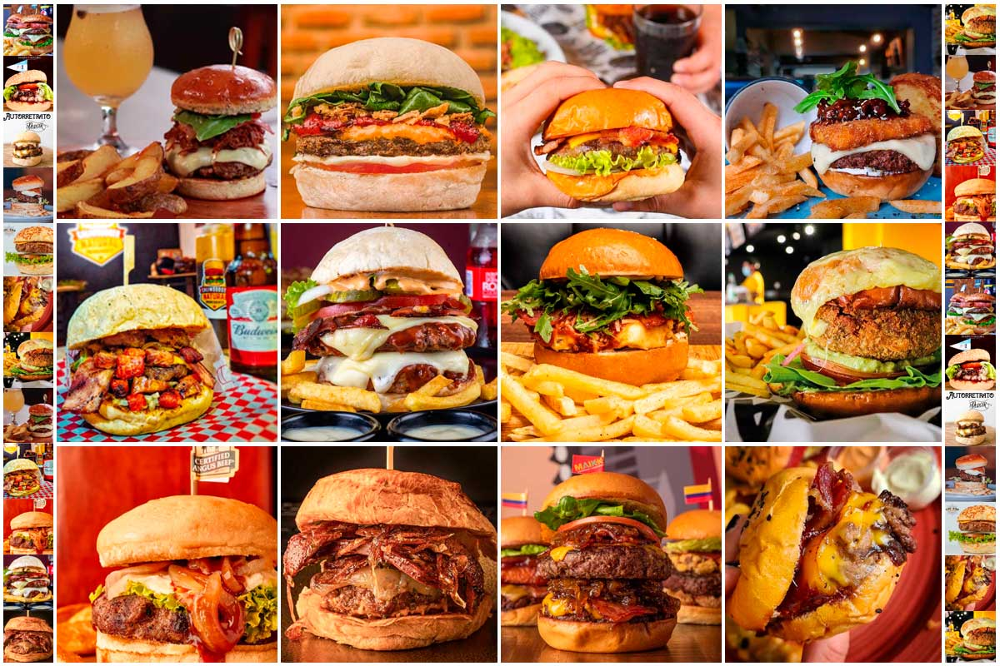
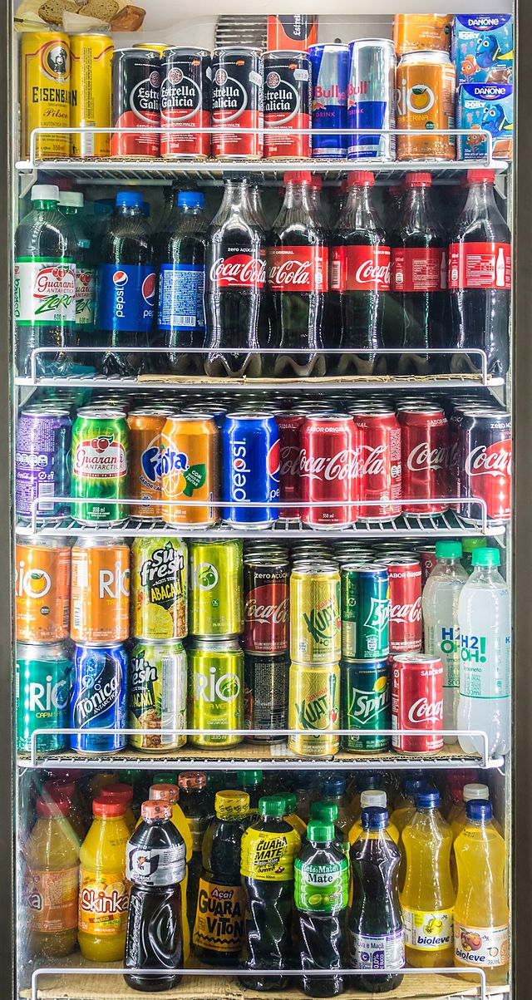

COMIDAS RAPIDAS
Pizzas
-Pizza Margherita: es una pizza clásica de tomate y mozzarella, con albahaca fresca y aceite de oliva.
-Pizza Napolitana: esta pizza también lleva tomate y mozzarella, pero además lleva anchoas, alcaparras y aceitunas negras.
-Pizza Hawaiana: esta pizza tiene una base de tomate y mozzarella, pero se agrega jamón y piña.
-Pizza de pepperoni: es una pizza con una base de tomate y queso mozzarella, cubierta con rodajas de pepperoni (salami picante).
-Pizza Vegetariana: es una pizza con una base de tomate y queso mozzarella, cubierta con verduras frescas como champiñones, cebolla, pimientos, aceitunas y tomates.
-Pizza de Pollo BBQ: esta pizza tiene una base de salsa BBQ en lugar de salsa de tomate, queso mozzarella, pollo desmenuzado, cebolla y a veces maíz.
-Pizza de cuatro quesos: es una pizza con una base de tomate y cuatro tipos diferentes de queso como mozzarella, gorgonzola, parmesano y provolone.
-Pizza Calzone: Es una pizza que se dobla y se hornea en forma de empanada, típicamente rellena de queso, tomate, pepperoni, champiñones, entre otros ingredientes.
.jpeg)
-Hamburguesa Clásica: Una hamburguesa hecha de carne de res, normalmente servida en un pan de hamburguesa con lechuga, tomate, cebolla y una salsa como ketchup o mayonesa.
-Cheeseburger: Una hamburguesa con queso fundido sobre la carne de res, normalmente servida con lechuga, tomate, cebolla y una salsa.
-Hamburguesa con Bacon: Una hamburguesa con tiras de tocino crujiente sobre la carne, servida con lechuga, tomate, cebolla y una salsa.
-Hamburguesa de Pollo: Una hamburguesa hecha de pechuga de pollo, normalmente servida en un pan de hamburguesa con lechuga, tomate, cebolla y una salsa.
-Hamburguesa Vegana: Una hamburguesa sin carne, hecha de una mezcla de vegetales y proteína de soja. Normalmente se sirve con lechuga, tomate, cebolla y una salsa vegana.
-Hamburguesa con Queso Azul: Una hamburguesa con queso azul desmenuzado sobre la carne de res, servida con lechuga, tomate, cebolla y una salsa.
-Hamburguesa de Pavo: Una hamburguesa hecha de carne de pavo, normalmente servida en un pan de hamburguesa con lechuga, tomate, cebolla y una salsa.
-Hamburguesa de Cordero: Una hamburguesa hecha de carne de cordero, normalmente servida en un pan de hamburguesa con lechuga, tomate, cebolla y una salsa.

-Coca-Cola: Una de las gaseosas más populares del mundo, con un sabor dulce y un poco picante.
-Pepsi: Una gaseosa con sabor dulce, similar a la Coca-Cola, pero con un sabor un poco diferente.
-Sprite: Una gaseosa con sabor a limón y lima, con un sabor fresco y efervescente.
-Fanta: Una gaseosa con sabor a frutas, disponible en muchos sabores diferentes como naranja, uva y fresa.
